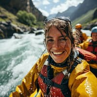

At Rapid Rush Expedition, We ensure the best experience for you and your families and friends. Rafting on certain sections of rivers is considered an extreme sport and can be fatal, while other sections are not so extreme or difficult. Rafting is also a competitive sport practiced around the world which culminates in a world rafting championship event between the participating nations.